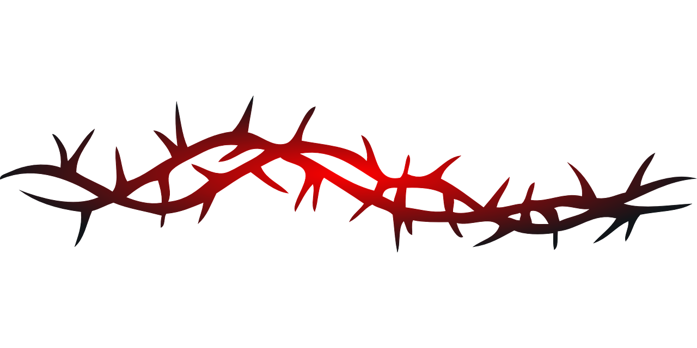

Algumas coisas, não importa o quão fundo as enterremos, hora ou outra voltam à superfÃcie. Hoje, sinto que a carta que lhe escrevi como um adeus, e nunca entreguei, voltou.
Minha memória me falha em muitos aspectos, mas é curioso como lembro exatamente de como te conheci. Lembro com quem estava falando e que fui eu quem sugeriu ir ver quem era aquela pessoa sozinha no chat de voz. Também me lembro perfeitamente do jeito que você me olhou no parque, sem saber ao certo se era eu ou não. Não me recordo das roupas que você usava, mas seu rosto ainda é bem nÃtido na minha mente.
Sendo assim, gostaria de fugir do meu comportamento padrão, que seria inundar você de elogios, dizendo o quanto acho que é isso ou aquilo. Em vez disso, vou deixar aqui um ponto de vista diferente. Um ponto de vista mais cauteloso. Um ponto de vista desapaixonado. Um ponto de vista são. Um ponto de vista... oco.
Desde que me entendo por gente, sinto essa solidão persistente. Tive amigos incrÃveis ao longo dos anos, pessoas realmente iluminadas, e, mesmo assim, o vazio sempre me acompanhou. Eu não os culpo. Na verdade, não é culpa de ninguem.
Eu gostaria de citar aqui cada detalhe — desde o jeito que você me olhava até o toque suave das suas mãos no meu rosto — que me fazia sentir que todas as coisas que vivi, ou deixei de viver, não importavam mais... mas não é sobre isso o texto.
🥀 As flores 🥀
As flores representavam fortitude — a força de continuar. Elas me mostravam que vale a pena seguir em frente, pois, se não eu, quem verá essas flores? Quem poderá contemplar essas pequenas belezas que, mesmo em lugares desfavoráveis, ainda florescem? Foi assim que o sentimento por você surgiu: num terreno árido, quase impróprio para a vida.
No seu caderno você disse que as flores sempre serão sobre mim, mas isso não é verdade. Sem você, eu não teria enxergado as flores. Sem você, as flores nunca teriam sido vistas. Do meu ponto de vista, as flores sempre foram sobre você, Yen. Do meu ponto de vista, você
🩸 O sangue 🩸
Seja por destino, coincidência, poesia ou pura maldade de nossos criadores, não existe sÃmbolo que te represente melhor do que uma flor. Nada é mais delicado, nada é mais hipnotizante, nada mais merecedor de contemplação. Tanto que a ideia de tê-la só para mim me atormentava a cada instante, a vontade de cravar as mãos na terra e puxar você por inteira me consumia. E, sendo você a flor que é, não podiam faltar os espinhos.
Eu sabia que seus espinhos eram tão inevitáveis quanto sua essência. Ainda assim, eu mergulharia num jardim de berberis se isso significasse poder sentir você nas minhas mãos. Mas talvez essa devoção não tenha apenas me manchado com seu sangue; ela também te amassou, te sufocou, arrancando, pouco a pouco, suas pétalas.
O espinho de não ser o que você queria vai ficar para sempre no meu peito. Não há um dia em que eu não sinta falta de conversar com você, ouvir você, sentir você, estar aqui por você e de você estar aqui por mim.
Gostar de você era tão natural quanto respirar. Sabe quando você percebe que está respirando e ativa o modo manual? Dói saber que você estava nesse modo quando estava comigo. Dói saber que você se arrepende de ter tentado. Dói, porque, se alguém ou alguma coisa me desse a chance de voltar a fevereiro de 2022, eu faria TUDO de novo. Entraria naquela sala do Discord de novo. Tentaria te ensinar array de dois vetores de novo. Seria o seu monstro de novo. Te apresentaria o Fred de novo. Te levaria a mariposa de novo. Tudo para sentir seu abraço de novo, o seu cheiro de novo. Para ouvir sua voz de novo. Ouvir você reclamar da faculdade de novo. Ouvir você reclamar do trabalho de novo. Ouvir você explicando o meme sem graça do Chico Buarque de novo. Ver você batendo os pezinhos de irritação de novo. Ver você andando alegre na minha direção de novo. Ver o jeito que você me olhava de novo. Ver a Lil Yenda caindo de cara na neve de novo. Ter você nos meus braços de novo. Ser o seu travesseiro enquanto você adormecia.
Poder sentir que esses 24 anos de vida valeram. Que valeram mais do que a pena. Que valeram mais do que a plumagem. Você é a flor. Você é a lâmpada. Você é a ave. Você é a primavera. Você é a pintura. Você é a minha mancha de sangue.
Você é.
 Os Espinhos
Tudo ter acontecido tão rápido me deixou extremamente perdido. Eu tenho praticamente nenhuma experiência com relacionamentos. Poder expressar o oceano de coisas que eu sentia acabou me afogando no mar de poréns. Às vezes, eu planejava demais, na esperança de que tudo fosse perfeito. Outras vezes, pensava apenas em te ver, o que fazia com que eu deixasse o planejamento de lado. Me machuca não ter sido mais organizado com você. Me machuca não saber como lidar com algumas coisas que aconteceram — o lance do iFood, o sexo, te fazer carinho quando você precisava e, o que mais dói, os seus sinais mais discretos.
Às vezes, a ideia de estar com você me deixava anestesiado, desconectado da realidade. Por muitos momentos, eu simplesmente não conseguia conceber o que estava acontecendo. Você parecia unica demais pra ser verdade. Lembro do dia em que você veio para casa de saia. Não queria parecer emocionado demais, e isso me machuca agora, porque acabei não vocalizando o quão inefável você estava. Mas, ao mesmo tempo, fico lisonjeado por saber que você se arrumou daquele jeito só pra mim.
Posterguei bastante escrever sobre os espinhos, porque eles são as feridas — as minhas e as suas. Mas sinto que preciso. O seu jeito de se afastar é tão pontudo, tão áspero, tão sombrio e incerto. Posso dizer com plena consciência que a paixão que senti por você foi tão intensa quanto a dor de te ver escorregando das minhas mãos como um punhado de areia seca ao vento. E, apesar de não ter conseguido desfazer essa imagem errônea de que eu só queria o seu corpo, senti como se o apocalipse finalmente tivesse chegado. O juÃzo final. O clangor das trombetas. O Ragnarök. O fim do reinado dos deuses. O fim do meu panteão. O fim da minha religião dualista. O fim de todos os sonhos que tive com você. O fim de todas as perspectivas. O fim da ideia de poder um dia te amar. O fim do Nós.
Você é um mistério envolto em carne e água, Yen. Eu me perdi tentando te entender, tentando fazer sentido de você na minha cabeça. Eu disse que não era o seu super-homem, mas a ideia de querer te salvar sempre esteve ali. Me machuca ter percebido tarde demais que você não precisava de alguém que te explicasse, mas de alguém que simplesmente te escutasse, sem tentar decifrar cada camada sua, sem buscar respostas para o enigma que você é.
You were my call of the wild and I, unfortunately, became the stranger.
Reflexões de uma Alma Doloridacom amor,
g.
ps: lembra quando eu disse que você parecia uma estátua grega? Não era uma estátua. O que veio na minha cabeça foi essa pintura.